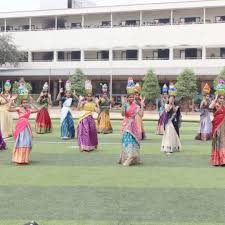
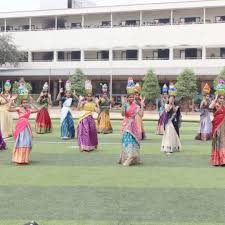
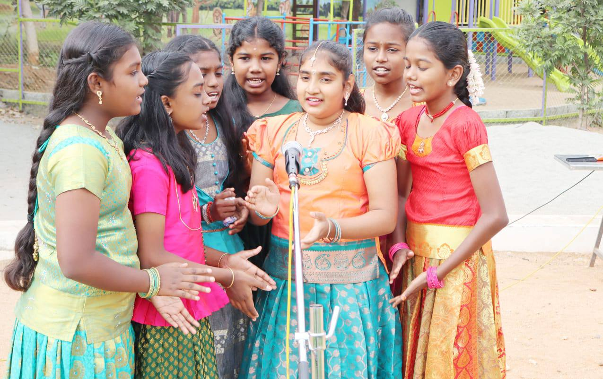
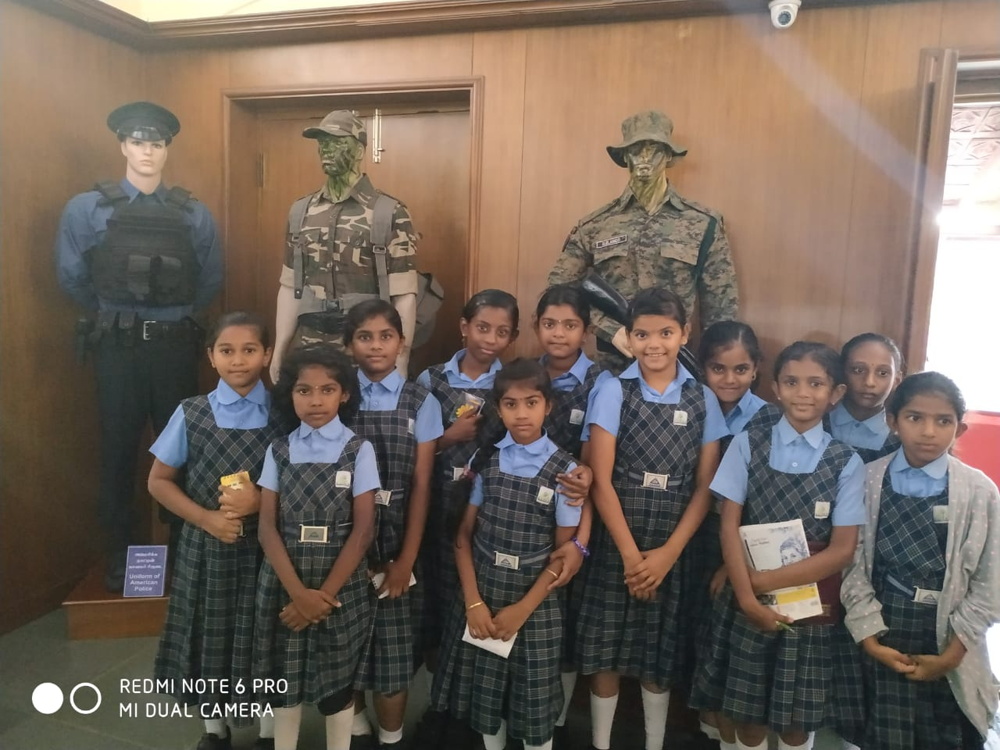
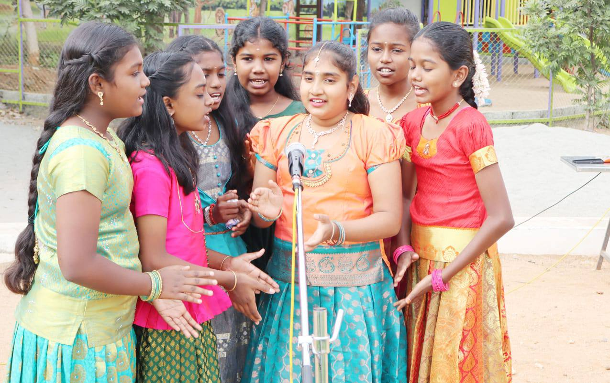
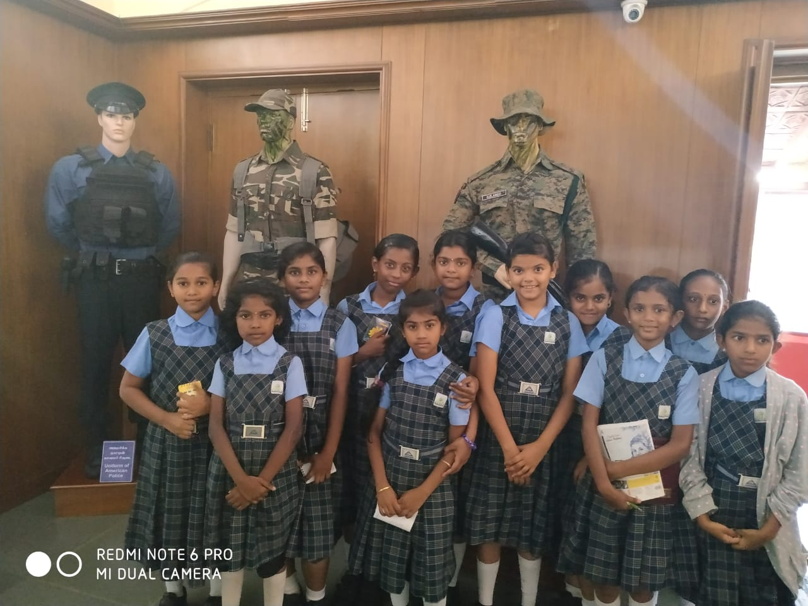

WELCOME DEAR PARENTS... TO DOBBS PUBLIC SCHOOL
ABOUT DOBBS

DOBBS PUBLIC SCHOOL has been started with the blessings under the able guidance of His Holiness Dr. Thava Thiru Ramanantha Kumaragurubara Swamigal of Kaumara Madalayam, Saravanapuram, Coimbatore.
In the footsteps of his Holiness, DOBBS Public School has been entrusted in the able hands of well known educationalists. At DOBBS the focal point of our education emphasizes on intellectual growth, physical fitness, emotional well-being, and ethical values. These values prepare our students to be the torch bearer of our great country.
OUR FOUNDERS AND MANAGEMENT
Founders
Mr. V. R. Gnanasambandam
Chairman
Mrs. P. Maragatham
President
Management

Mr. G. Karthikeyan
Correspondent
Mrs. Anitha Karthikeyan
Secretary

Dr. A. Soundarrajan
Academic Advisor
Mr. Sampath Kumar
Administrative Officer
Mrs. S. Nithya
Head Mistress
A Glance on our Activities
These pictures capture memorable moments from the celebrations and activities in our school. Celebrating festivals and participating in school activities act as a living classroom, fostering holistic development by nurturing cultural awareness, empathy, teamwork, and core values such as gratitude and unity. Through immersive experiences like skits, crafts, food, and dance, students connect with diverse backgrounds, build confidence, and develop essential life skills in an educational approach that is joyful, engaging, and rooted in a positive social and moral environment.
Co-Curricular Activities
Apart from academics, our school also focuses on extracurricular activities and competitions, giving students opportunities to showcase their talents and shine in their own ways. By participating in competitions, students learn to manage time, open their minds to creativity, and make the best use of these platforms to express their abilities. These activities foster essential life skills such as leadership, teamwork, and creativity, while also strengthening mental and physical well-being.

Sports

Yoga

Art & Craft

Music

Silambam

Robotics
100% Results

Bharat Scouts and Guides
Bharat Scouts and Guides is a national movement that helps students grow into disciplined, responsible, and confident citizens. It nurtures leadership, teamwork, service, and respect for nature and the nation through activities such as camps, drills, social service, community work, and outdoor training. Through these experiences, students learn practical life skills and develop courage, cooperation, and a strong sense of duty. The movement also encourages patriotism and inspires students to become caring individuals who are always ready to serve the nation.

Infrastructure
LABS:
Laboratories play a crucial role in schools by bridging the gap between theoretical knowledge and practical application, fostering critical thinking, and promoting hands-on learning. They help students visualize abstract concepts, enhancing memory retention and stimulating scientific curiosity. Moreover, laboratories develop essential skills such as research, data analysis, and teamwork, preparing students for higher education and future STEM careers.
LIBRARY:
A school library is the cornerstone of a student’s intellectual growth, serving as a vital hub for fostering literacy, critical thinking, and independent learning. By providing access to a wide range of resources beyond textbooks, it encourages the exploration of new ideas and nurtures a lifelong reading habit. It also offers a safe and stimulating environment for research, quiet study, and the development of essential information-literacy skills, thereby supporting academic success and enriching the overall curriculum.
TRANSPORT:
School transport is a crucial component of educational infrastructure, ensuring safe, punctual, and convenient daily commutes for students while helping to reduce traffic congestion and pollution. It plays a significant role in improving school attendance by providing reliable access for students who live far away. Furthermore, it enhances security through well-managed and monitored transport services, while also fostering social interaction, independence, and discipline among students.
SMART CLASSES:
Smart classes are crucial in modern education as they transform traditional, passive learning into engaging and interactive experiences through multimedia tools such as digital boards, videos, and simulations. By visualizing complex concepts, they enhance student attention, improve retention, and enable faster and deeper understanding. Furthermore, smart classes encourage collaboration, support diverse learning styles, and prepare students for a technology-driven future.
Academics:
KINDERGARDEN:
Kindergarten serves as a foundational one- to two-year bridge between home and formal schooling for children aged 4–6, focusing on holistic development through play, social interaction, and early academics. It introduces essential routines, basic literacy, numeracy, and social skills such as sharing and cooperation, preparing children for a smooth transition to elementary school. The environment is typically colorful and well-structured, fostering curiosity and emotional growth in a safe and engaging space.
PRIMARY:
Primary school constitutes the crucial first stage of formal education, typically serving children aged 5 to 11, and establishes essential foundational skills in literacy, numeracy, and social development. As a cornerstone of lifelong learning, it focuses on holistic growth by fostering cognitive development and creativity during critical early years of brain development. Often mandatory, these schools (also known as elementary or grade schools) provide a structured and nurturing environment that prepares children for future education and responsible citizenship.
SECONDARY:
Secondary school is a crucial transitional stage that bridges elementary education with higher education or vocational training. It offers a diverse, subject-specialist curriculum designed to develop critical thinking, in-depth academic knowledge, and essential life skills. This stage emphasizes personal development, social responsibility, and preparation for future careers or university, marking a significant leap in academic growth.
SENIOR SECONDARY:
Senior secondary education is the final phase of schooling that bridges secondary education with higher studies or career paths. It allows students to specialize in streams such as science, commerce, or humanities, preparing them for board examinations (CBSE, ICSE, or State Boards) that are essential for college admissions. This crucial stage focuses on in-depth academic learning along with technical and skill-based development.
NEET AND JEE:
Integrating NEET and JEE preparation within the school curriculum, often termed School Integrated Programs (SIP), allows students to balance board examinations with competitive entrance tests through specialized, time-efficient coaching. These programs usually start in high school and focus on intensive NCERT-based learning, regular mock tests, and strengthening core concepts for both engineering and medical pathways. This approach aims to reduce student burnout by eliminating the need for separate coaching center hours.
CONTACT US:-
📞:+91 88380 73214
✉:info@dobbsschool.com
🏫:SF No.7/1 B, 3/2 Pt.,Karattumedu, Rathinagiri Foot Hills,
Keeranatham Road, Saravanampatti
PO.,Coimbatore - 641 035
STAY CONNECTED
Social Media


 


 


